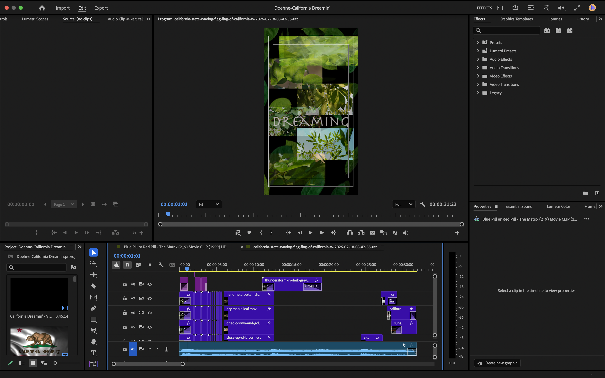

SOFTWARE
Adobe Photoshop
Adobe Premiere Pro
MY ROLE
Independent Motion Designer
Video Editor
DELIVERABLES
Concept Development
Storyboarding
Motion Design
Video Editing
TOOLS & CREDITS
Music: "California Dreamin'"
Performed by Vince Cox feat. Laura Currie
Originally performed by The Mamas & the Papas
Envato Elements (licensed subscription assets)
PROJECT OVERVIEW
California Dreamin' is a conceptual motion graphic project that reimagines the classic song through a calm, atmospheric visual experience. The short animation explores the feeling of nostalgia, nature, and the California landscape through layered imagery, movement, and cinematic pacing.
The goal was to translate the emotion of the song into a visual journey by combining photography, compositing, and video editing techniques. The project focuses on creating mood and storytelling through subtle motion rather than traditional narrative animation.


CREATIVE DIRECTION
The visual direction combines organic textures, natural elements, and warm cinematic tones to create a dreamlike interpretation of California. Leaves, landscapes, and atmospheric transitions were used to build a sense of movement and reflection while supporting the emotional tone of the music.
PROCESS
The process began with listening closely to the music and identifying the emotional tone that could be translated into a short motion graphic experience. After exploring the original Mamas and the Papas version of “California Dreamin’,” I discovered Vince Cox feat. Laura Currie’s darker interpretation, which shifted the creative direction toward a more atmospheric and reflective visual narrative.
After importing the full track into Premiere Pro, I analyzed the song structure and selected a thirty-second section that provided the strongest emotional progression. From there, I developed a visual concept centered around the transformation of the California landscape, using imagery and movement to reflect the shift from warmth and nostalgia into darker, more introspective emotions.
The California Republic flag became the central visual element, but finding the right representation required careful consideration. Rather than a bright, energetic interpretation, I selected a slower, subtly rippling flag animation that better matched the mood of the song. Additional visual elements were chosen to support the seasonal transition represented in the music, including leaves changing from green to brown to symbolize the movement from summer into fall, and snow-covered figures timed with the song’s chimes to reinforce the feeling of isolation and reflection.
The final sequence builds toward a dark sunset landscape, using layered imagery, timing, and atmospheric movement to create a visual conclusion that mirrors the emotional descent of the music.

GALLERY

Your vision. In motion.
CONTACT ME